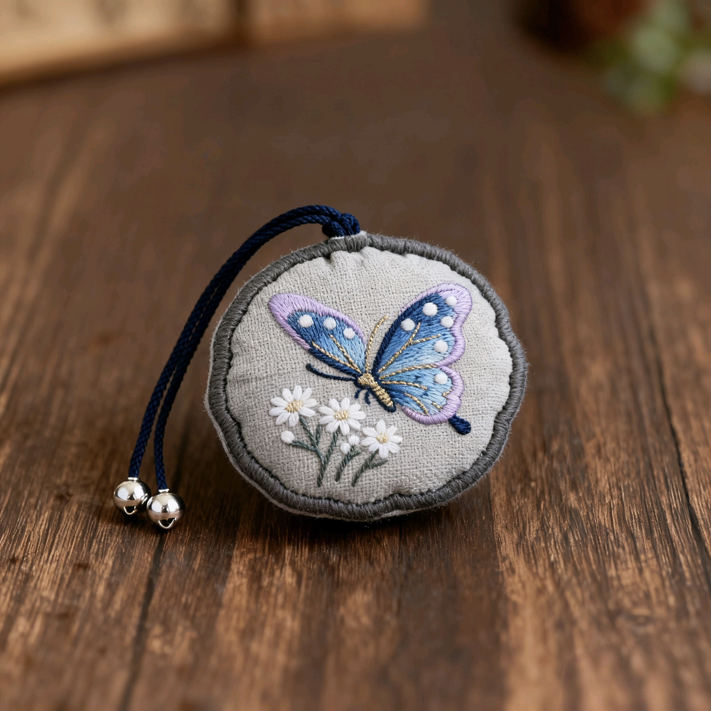
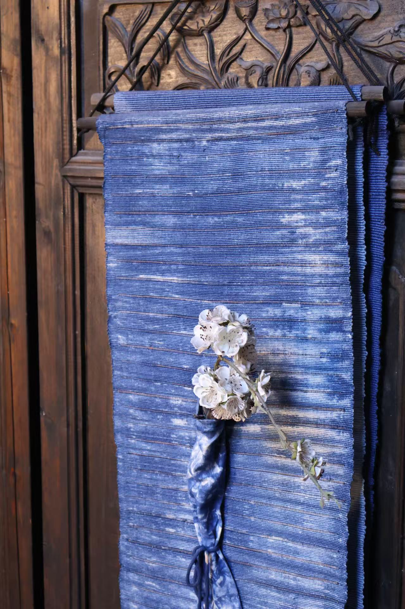
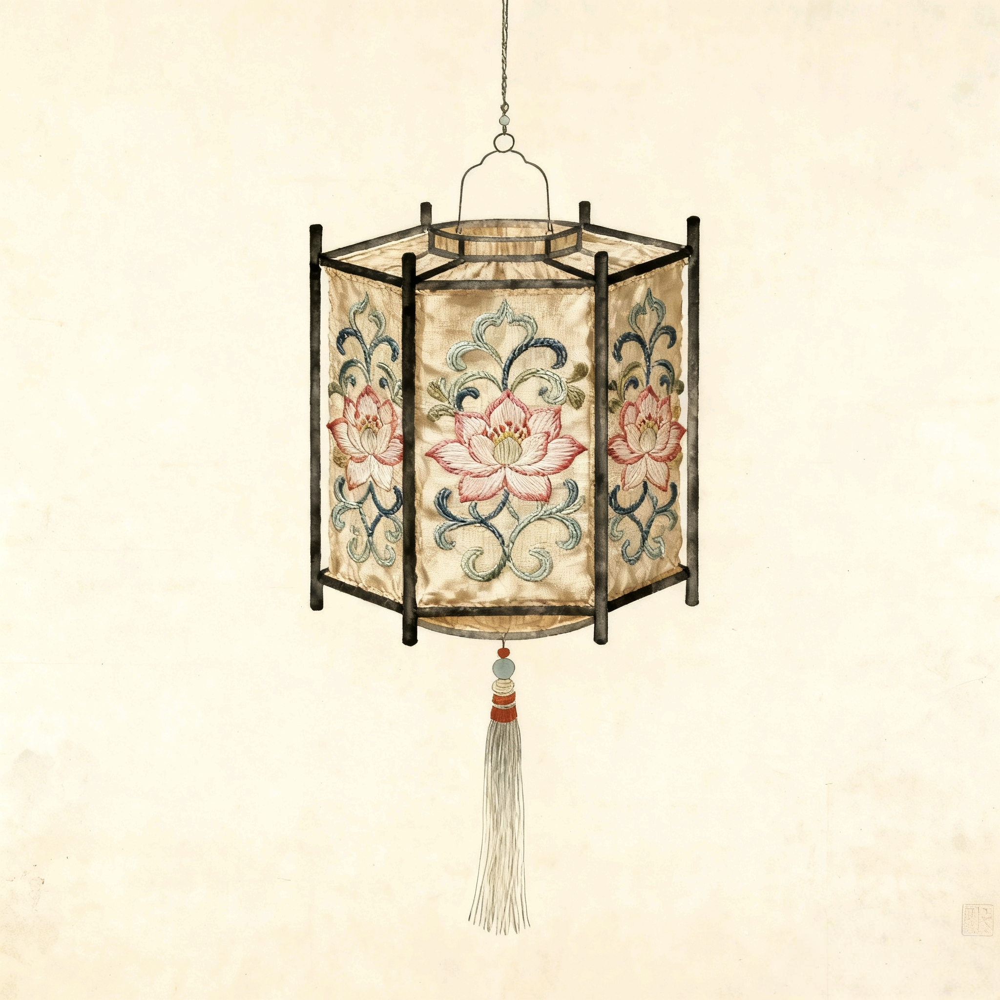
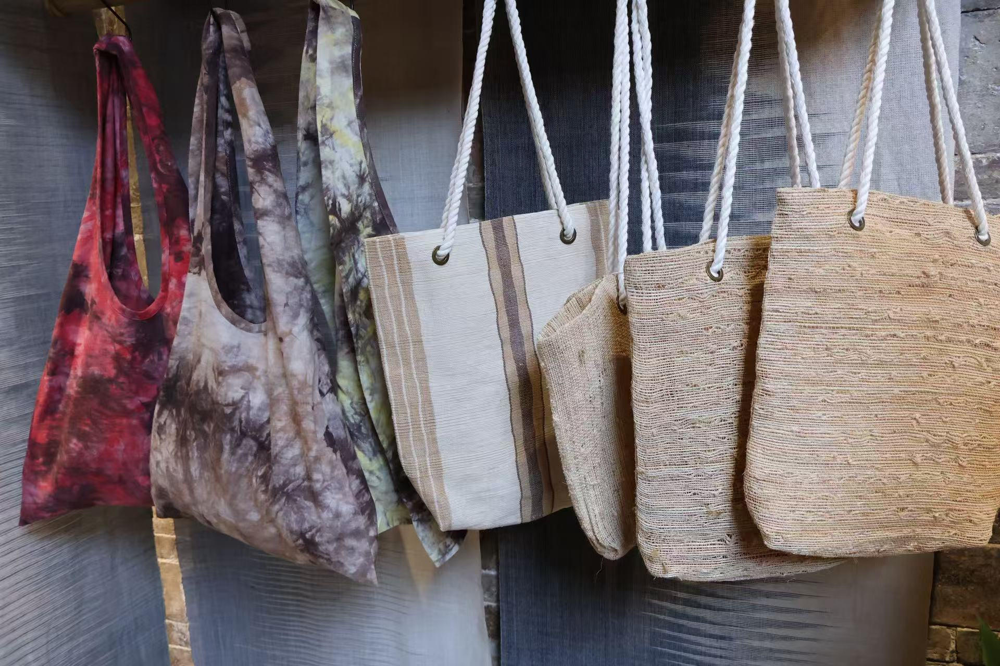

一匹夏布传千年
早在《左传》卷十一《晏子不死君难》中，就有将苎麻制衣当作馈赠礼品的记载："晏子'聘于郑见子产，如旧相识，与之编带，子产献苎衣焉""。 江西大部分地区的地理条件适合种植苎麻，因此原料充足老百姓勤劳、富有创造力，所以历史上的江西夏布业发展比较成熟。
而双林种植苎麻的历史更是悠久，双林人民用勤劳的双手将夏布产业延续到几千年后的今天，双林镇所在的分宜市夏布织造技艺也被列入江西省非物质文化遗产名录。
夏布自服饰文明伊始，就广泛应用于制作深衣、朝服、冠冕等。魏晋南北朝时期，士大夫以葛麻织物作常服，被认为是俭朴的象征
明代张昶所著的《吴中人物志》记载，当地人过五十岁大寿，要穿戴苎衣、桐帽、棕鞋和布袜，以此告诫子孙，即便生活富裕了也要俭朴。
据清朝史料记载，穿夏布服者多为学生、平民、隐士、道士、僧人等。



夏布的服装和生活，在历史中，被赋予了特殊意义。
渝州绣坊、江西夏布文化传播有限公司、江西恩达家纺有限公司等为代表的企业围绕夏布绣进行不断创新、在绣制文人各画之外，还开发出夏布绣折扇、夏布绣百家姓、夏布绣包、夏布绣灯等产品。

夏布把"最凉快的天然纤维"+"最高强的麻骨"+"非遗级手工"集成在一匹布里，因此在高端夏季服饰、文化礼品、艺术家居等细分赛道里，棉、麻、丝、化纤都无法一次性替代其综合优势。